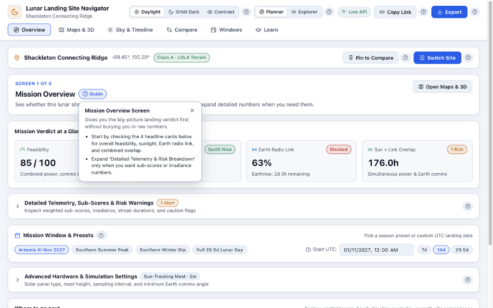
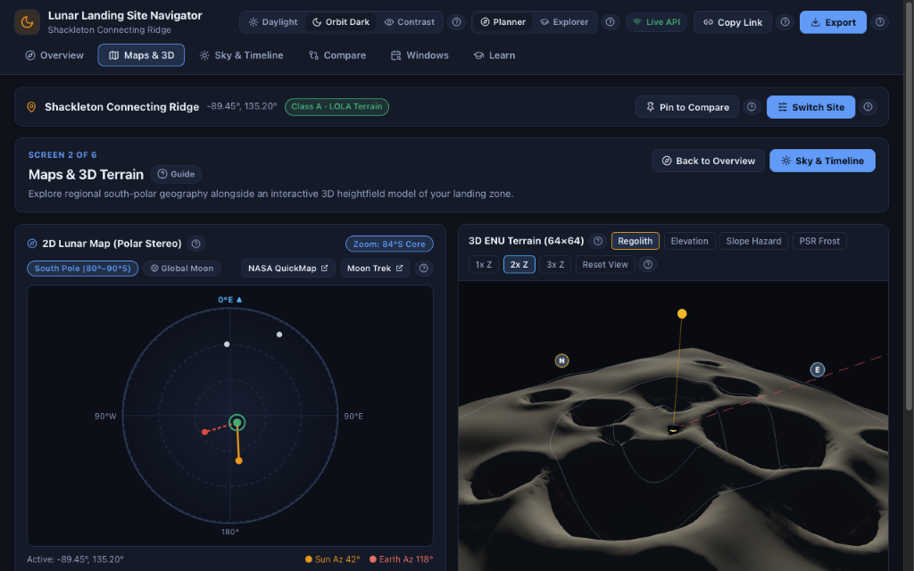
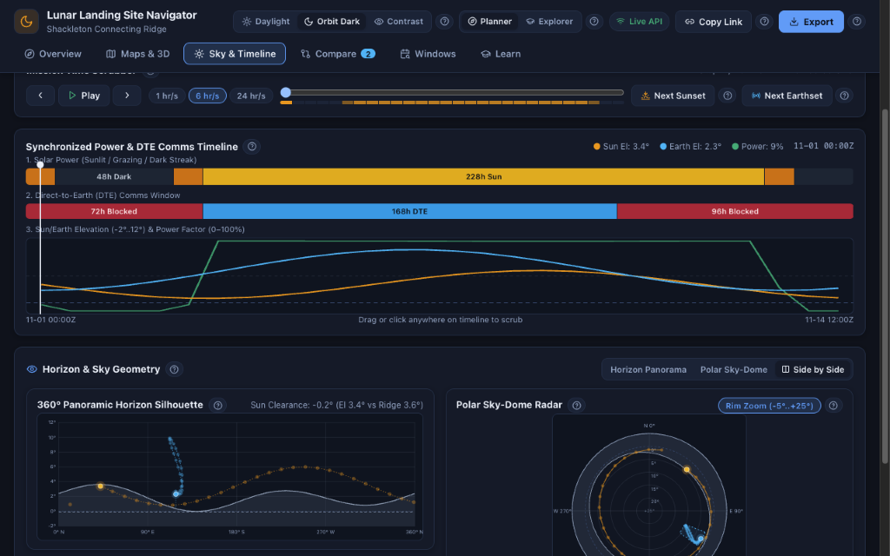
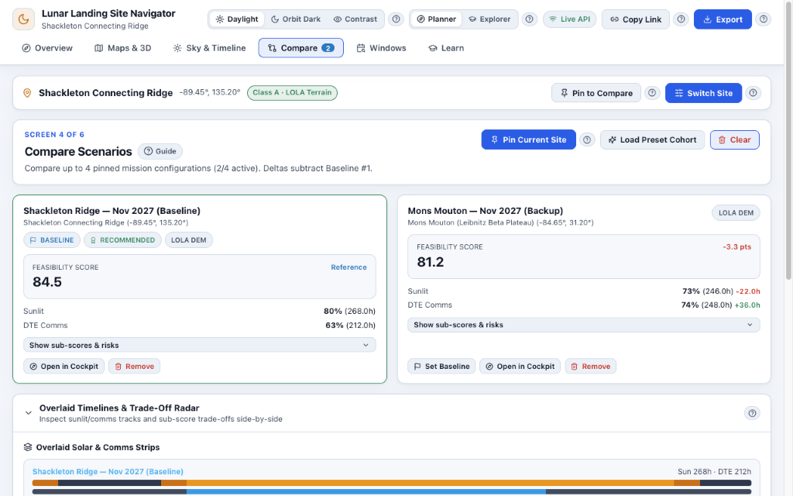
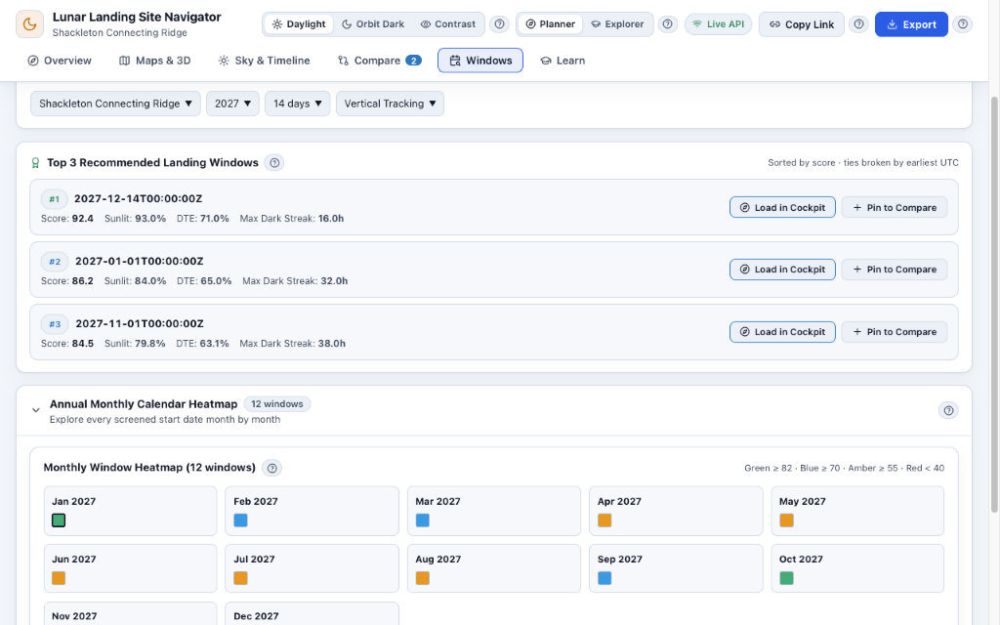

Lunar Landing Site Navigator
An intuitive, multi-theme mission planning and educational visualization cockpit for evaluating illumination, terrain occlusion, and Direct-to-Earth communications across lunar landing sites.
Explorers & Educators: Daylight default theme, plain-language metrics & inline popovers.


Why Lunar Landing Evaluation Needs a Calmer, Unified Cockpit
Choosing a lunar landing site means balancing grazing sunlight, ridge shadows, and Earth line-of-sight—without drowning users in disconnected tools or raw telemetry grids.
- Extreme Polar Geometry: Near the lunar South Pole, the Sun skims within degrees of crater rims while Earth hovers low in a libration corridor where ridges block Direct-to-Earth (DTE) radio links.
- Fragmented Engineering Workflow: Planners switch between planetary GIS maps, JPL ephemeris tables, and manual spreadsheets whenever mission start dates or solar-mast heights change.
- "Airplane Cockpit" Clutter: Dense dark dashboards show dozens of unlabeled metrics simultaneously, intimidating newcomers and hiding critical risks under visual noise.
- Silent Extrapolation Risks: Many tools mix interpolated polar DEMs with flat assumptions for mid-latitude regions instead of surfacing data boundaries honestly.
- Decision-First Overview: Opens with 4 scannable verdict cards (Feasibility, Sunlight, Earth Radio Link, Overlap) and reveals detailed sub-scores and hardware controls only when expanded.
- Spatial + Sky + Temporal Sync: Links 2D stereographic maps, interactive 3D heightfields, 360° horizon silhouettes, and a 3-track mission scrubber on one URL state.
- Planner & Explorer Modes: One toggle adapts framing between engineering analysis and accessible STEM exploration without changing any underlying metric.
- Honest Class A vs. Class B Model: Reserves LOLA polar topography specs for south-polar targets and labels mid-latitude sites clearly as spherical limb only.
Intuitive 6-Screen Navigation, 3 Themes & Contextual Popover Guides
Replaces single-screen telemetry clutter with calm progressive disclosure, adaptive CSS custom-property themes, and click-to-read help where users need it.
Top tabs divide tasks cleanly: Overview, Maps & 3D, Sky & Timeline, Compare, Windows, and Learn—backed by a slide-over Switch Site drawer.
Defaults to clean Daylight for bright presentations, with instant switches to Orbit Dark (low glare) and High Contrast—zero Tailwind or runtime overhead.
Every section header and primary button (Pin to Compare, Switch Site, Copy Link, Export, Next Sunset) explains what it calculates and what to inspect next.
2D Polar Maps, 3D Heightfields & Synchronized Horizon/Comms Scrubbing
Scrubbing any timestamp updates solar incidence and Earth line-of-sight rays across both spatial terrain and sky-geometry charts.
- 2D South Pole Map: Polar stereographic projection (80°S–90°S & global view) with live Sun/Earth azimuth needles and direct links to NASA QuickMap & Moon Trek.
- Interactive 3D ENU Canvas: Three.js/R3F crater heightfield with Regolith, Elevation, Slope Hazard & PSR Frost layers plus live elevation exaggeration (1x–3x Z).

- 3-Track Mission Scrubber: Solar regime streaks (Sunlit / Grazing / Dark), DTE Comms availability, and elevation/power curves with 1-click Next Sunset & Next Earthset jumps.
- 360° Horizon & Polar Sky-Dome: Separates terrain horizon profile from spherical limb, tracking solar/Earth clearance with toggleable Rim Zoom (-5°..+25°).
Side-by-Side Scenario Comparison, Launch-Window Heatmap & Export
Turn individual site evaluations into rapid trade studies, seasonal landing-window discovery, and portable mission briefings.

- Signed Baseline Deltas: Compares pinned sites side-by-side showing feasibility deltas (-3.3 pts), sunlit hours (-22.0h), and DTE link gains (+36.0h).
- Overlaid Strips, Radar & Delay Shifts: Collapsible 4-axis trade-off radar, stacked solar/comms tracks, and +14 / +29.5 / +90 / +180-day launch-delay sensitivity explorer.

- Top Recommended Windows & Monthly Heatmap: Ranks seasonal launch dates by feasibility, sunlit fraction, DTE link, and max dark streak—with 1-click Load in Cockpit.
- Reproducible Sharing & Briefing Export: Canonical shareable URL parameters (Copy Link), CSV timeseries, full JSON bundle, and printable briefing sheet (Export).
16 IAU-Sourced Landing Sites, Honest Terrain Classes & Clean Architecture
Strict single-source contracts (Contracts A–E), precomputed offline architecture, and a deliberate zero-runtime-AI policy for full reproducibility.
- Aligned to NASA's 2024-10-28 nine Artemis III candidate landing regions.
- Every entry in curated_sites.yaml records an IAU/USGS Gazetteer feature URL—zero invented coordinates.
- Class A Polar Sites (≤ −80°): Targeted for NASA LRO LOLA ldem_80s_80m.img (80 m/px polar stereographic DEM & 360° horizon raycast).
- Class B Non-Polar Sites: Explicitly modeled as spherical_limb_only—terrain endpoints specify 409 TERRAIN_NOT_AVAILABLE and null terrain/feasibility scores.
- Ephemeris & Offline Rule: Build-time JPL Horizons (MOON_ME, 2026–2029) site packs ensure zero runtime network calls.
- Backend (Python 3.12): FastAPI + Pydantic v2 schemas (/health, /sites, /sites/{id}/terrain, /evaluate, /compare, /windows).
- Frontend (React + TS): Strict TypeScript, Vite, Three.js / React-Three-Fiber, 4 decoupled Zustand stores, native fetch + pure CSS variables.
- No Runtime AI / ML: Closed-form computation only—every metric is verifiable against NASA/JPL references with zero inference drift.
Verified Engineering Quality Today & Clear Delivery Path
Strict CI/local guardrails validate types, linting, formatting, file budgets (≤ 280 lines), and live UI flows while remaining transparent about next pipeline milestones.